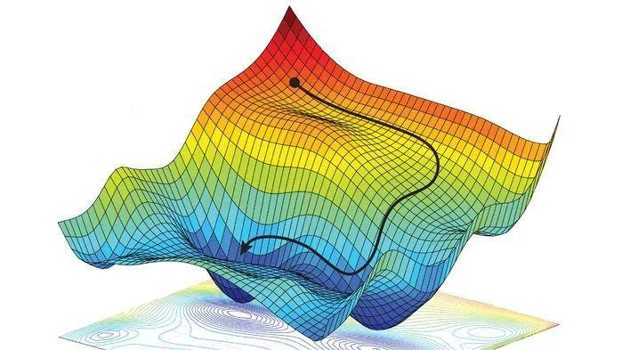

梯度下降法
前言
梯度下降法gradient descent是求解无约束最优化问题的一种最常用的方法，它是一种迭代算法，每一步需要求解目标函数的梯度向量。
问题抽象
f(x)是Rn上具有一阶连续偏导数的函数，要求解的无约束问题是:minf(x),x∈Rn， 其中x∗表示目标函数f(x)的极小值点
关键概念
- 迭代：选取适当初始值x(0)，不断迭代更新x的 值，直至收敛
- 梯度下降：负梯度方向是使函数值下降最快的方向，我们在迭代的每一步都以负梯度方向更新x的值
- 收敛：给定一个精度ϵ，在迭代的每一轮根据梯度函数g(x)=▽f(x)计算梯度gk=f(xk)，∣∣gk∣∣<ϵ时认为收敛
- 学习率：也叫做步长，表示在每一步迭代中沿着负梯度方向前进的距离
直观理解
以下图为例，开始时我们处于黑色圆点的初始值（记为x(0)），我们需要尽快找到函数的最小值点，最快的方法就是沿着坡度最陡的方向往下走。

算法细节
由于f(x)具有一阶连续导函数，若第k次迭代值为x(k)，则可将f(x)在x(k)附近进行一阶泰勒展开：
f(x)=f(x(k))+gkT(x−x(k))
其中gk=g(x(k))=▽f(x(k))在x(k)的梯度。
接着我们求出第k+1次的迭代值x(k+1):
x(k+1)←x(k)+λkpk
其中pk是搜索方向，取负梯度方向pk=−▽f(x(k))，λk是步长，需满足：
f(x(k)+λkpk)=λ≥0minf(x(k)+λpk)
算法实现
- 输入：目标函数f(x)，梯度函数g(x)=▽f(x)，计算精度ϵ
- 输出：f(x)的极小值点x∗
- 步骤:
- 取初始值x(0)∈Rn，置k为0
- 计算f(x(k))
- 计算梯度gk=g(x(k))，当∣∣gk∣∣<ϵ时停止迭代，令x∗=x(k);否则，令pk=−g(x(k))，求λk，使f(x(k)+λkpk)=minλ≥0f(x(k)+λpk)
- 令x(k+1)←x(k)+λkpk，计算f(x(k+1))，当∣f(x(k+1))−f(x(k))∣<ϵ或∣xx(k+1)−x(k)∣<ϵ时停止迭代，令x∗=x(k+1)
- 否则，令k=k+1，回到步骤3
算法调优
- 学习率：学习率太小时收敛过慢，但太大时又会偏离最优解
- 初始值：当损失函数是凸函数时，梯度下降法得到的解是全局最优解；当损失函数是非凸函数时，得到的解可能是局部最优解，需要随机选取初始值并在多个局部最优解之间比较
- 归一化：如果不归一化，会收敛得比较慢，典型的情况就是出现“之”字型的收敛路径
注意事项
- 当目标函数是凸函数时，梯度下降法是全局的最优解，一般情况下梯度下降法的解不一定是全局最优解
- 梯度下降法的收敛速度未必是最快的